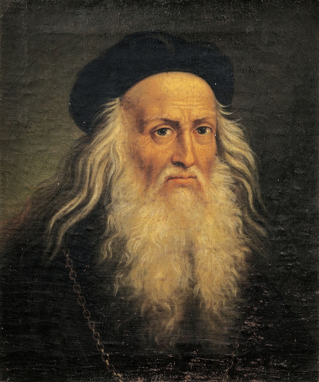
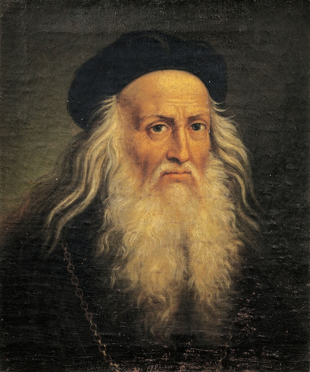

Leonardo da Vinci
Biography
(1452 - 1519)
Leonardo da Vinci was a Renaissance artist and engineer,
known for paintings like "The Last Supper" and "Mona Lisa,”
and for inventions like a flying machine.
Who Was Leonardo da Vinci?
Leonardo da Vinci was a Renaissance painter, sculptor, architect, inventor,
military engineer and draftsman — the epitome of a true Renaissance man.
Gifted with a curious mind and a brilliant
intellect, da Vinci studied the laws
of science and nature, which greatly informed his work. His drawings, paintings
and other works have influenced countless artists and engineers over the centuries.
Early Life
Da Vinci was born in a farmhouse outside the village of Anchiano in Tuscany,
Italy (about 18 miles west of Florence) on April 15, 1452.
Born out of wedlock to respected Florentine notary Ser Piero and a young peasant woman
named Caterina, da Vinci was raised by his father and his stepmother.
At the age of five, he moved to his father’s estate in nearby Vinci (the town from which his
surname derives), where he lived with his uncle and grandparents.
Education
Young da Vinci received little formal education beyond basic reading, writing and mathematics
instruction, but his artistic talents were evident from an early age.
Around the age of 14, da Vinci began a lengthy apprenticeship with the noted artist
Andrea del Verrocchio in Florence. He learned a wide breadth of technical skills including
metalworking,leather arts, carpentry, drawing, painting and sculpting.
His earliest known dated work — a pen-and-ink drawing of a landscape in the Arno valley — was sketched in 1473.
Early Works
At the age of 20, da Vinci qualified for membership as a master artist in Florence’s Guild of
Saint Luke and established his own workshop. However, he continued to collaborate with del Verrocchio
for an additional five years.
It is thought that del Verrocchio completed his “Baptism of Christ” around 1475 with the help of
his student, who painted part of the background and the young angel holding the robe of Jesus.
According to Lives of the Most Excellent Painters, Sculptors and Architects, written around 1550
by artist Giorgio Vasari, del Verrocchio was so humbled by the superior talent of his pupil that
he never picked up a paintbrush again. (Most scholars, however, dismiss Vasari’s account as apocryphal.)
In 1478, after leaving del Verrocchio’s studio, da Vinci received his first independent commission
for an altarpiece to reside in a chapel inside Florence’s Palazzo Vecchio.
Three years later the Augustinian monks of Florence’s San Donato a Scopeto tasked him to
paint “Adoration of the Magi.” The young artist, however, would leave the city and abandon both
commissions without ever completing them.
Leonardo da Vinci: Paintings
Although da Vinci is known for his artistic abilities, fewer than two dozen paintings attributed
to him exist. One reason is that his interests were so varied that he wasn’t a prolific painter.
Da Vinci’s most famous works include the “Vitruvian Man,” “The Last Supper” and the
“Mona Lisa.”
Vitruvian Man
Art and science intersected perfectly in da Vinci’s sketch of “Vitruvian Man,” drawn in 1490,
which depicted a nude male figure in two superimposed positions with his arms and legs
apart inside both a square and a circle.

The Last Supper
Around 1495, Ludovico Sforza, then the Duke of Milan, commissioned da Vinci to paint “The Last Supper”
on the back wall of the dining hall inside the monastery of Milan’s Santa Maria delle Grazie.
The masterpiece, which took approximately three years to complete, captures the drama of the moment when
Jesus informs the Twelve Apostles gathered for Passover dinner that one of them
would soon betray him. The range of facial expressions and the body language of the figures around the table
bring the masterful composition to life.
The decision by da Vinci to paint with tempera and oil on dried plaster instead of painting a fresco
on fresh plaster led to the quick deterioration and flaking of “The Last Supper.” Although an
improper restoration caused further damage to the mural, it has now been stabilized using modern conservation techniques.

Mona Lisa
In 1503, da Vinci started working on what would become his most well-known painting — and
arguably the most
famous painting in the world —the “Mona Lisa.” The privately commissioned
work is characterized by the enigmatic smile of the woman in the half-portrait, which derives from
da Vinci’s sfumato technique.
Adding to the allure of the “Mona Lisa” is the mystery surrounding the identity of the subject. Princess Isabella of Naples,
an unnamed courtesan and da Vinci’s own mother have all been put forth as potential sitters for the masterpiece. It has
even been speculated that the subject wasn’t a female at all but da Vinci’s longtime apprentice Salai dressed in women’s clothing.
Based on accounts from an early biographer, however, the "Mona Lisa" is a picture of Lisa del Giocondo,
the wife of a wealthy Florentine silk merchant. The painting’s original Italian name — “La Gioconda” — supports the theory,
but it’s far from certain. Some art historians believe the merchant commissioned the portrait to celebrate the pending birth
of the couple’s next child, which means the subject could have been pregnant at the time of the painting.
If the Giocondo family did indeed commission the painting, they never received it. For da Vinci, the "Mona Lisa" was forever
a work in progress, as it was his attempt at perfection, and he never parted with the painting. Today, the "Mona Lisa" hangs
in the Louvre Museum in Paris, France, secured behind bulletproof glass and regarded as a priceless national treasure
seen by millions of visitors each year.
Inventions
In 1482, Florentine ruler Lorenzo de' Medici commissioned da Vinci to create a silver lyre and bring it as a peace gesture to
Ludovico Sforza. After doing so, da Vinci lobbied Ludovico for a job and sent the future Duke of Milan a letter that barely
mentioned his considerable talents as an artist and instead touted his more marketable skills as a military engineer.
Using his inventive mind, da Vinci sketched war machines such as a war chariot with scythe blades mounted on the sides,
an armored tank propelled by two men cranking a shaft and even an enormous crossbow that required a small army of
men to operate.
The letter worked, and Ludovico brought da Vinci to Milan for a tenure that would last 17 years. During his time
in Milan, da Vinci was commissioned to work on numerous artistic projects as well, including “The Last Supper.”
Da Vinci’s ability to be employed by the Sforza clan as an architecture and military engineering advisor as well as
a painter and sculptor spoke to da Vinci’s keen intellect and curiosity about a wide variety of subjects.